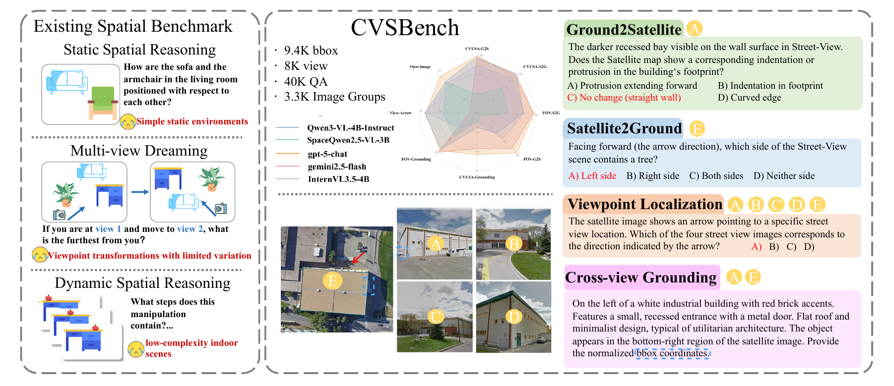
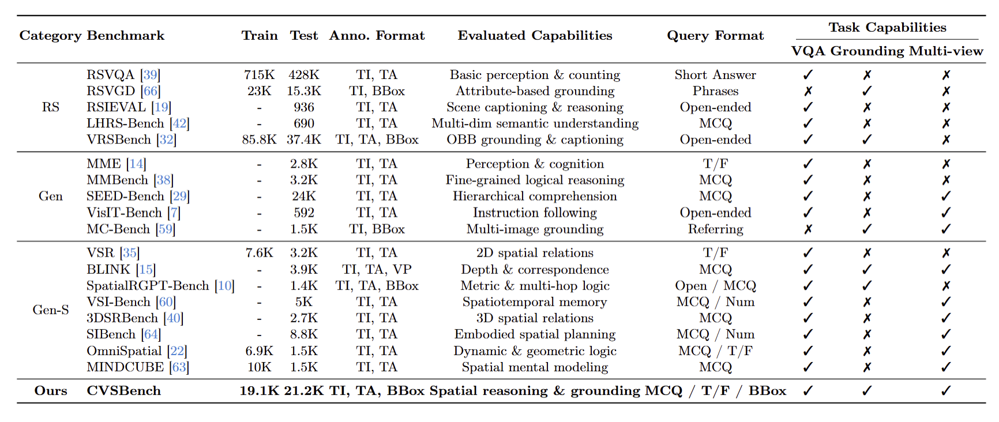
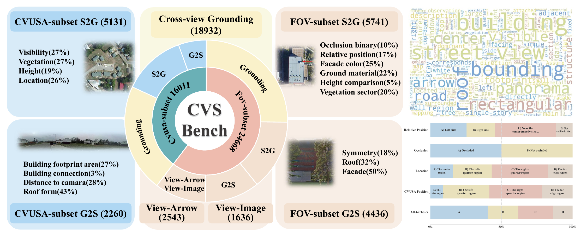
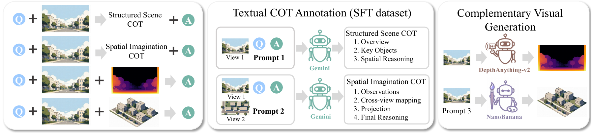
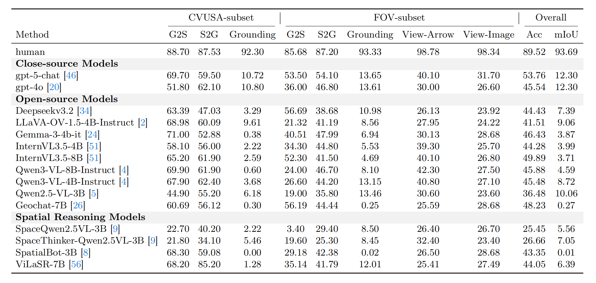
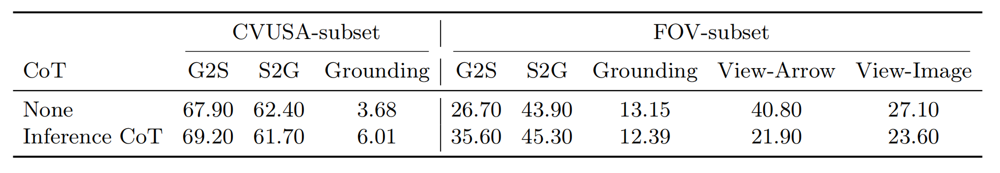
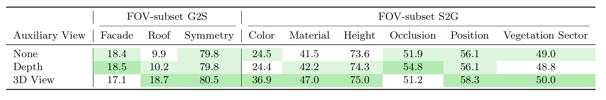
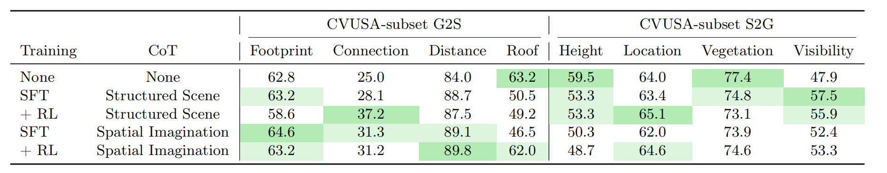
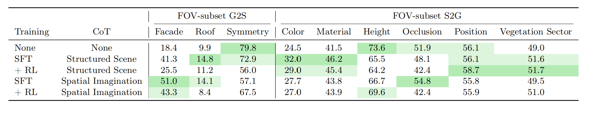

Abstract
CVSBench provides a unified benchmark for testing cross-view spatial reasoning under the challenging satellite-street setting. Rather than only measuring what a model recognizes in one image, it evaluates whether the model can preserve spatial consistency across viewpoints, infer hidden structure, and answer questions whose evidence is distributed across very different visual perspectives.
- It combines cross-view VQA, grounding, and viewpoint localization in a single benchmark.
- It moves beyond indoor and low-variation multi-view settings to realistic urban-scale overhead-to-ground scenes.
- It directly probes spatial imagination, not just object recognition or single-view reasoning.

Benchmark Comparison and Composition
Following the paper order, we first show where CVSBench sits relative to existing datasets, then summarize the internal task composition of the benchmark.


.png)
Image groups
Bounding boxes
Question-answer pairs
Method and Spatial Imagination Pipeline
The paper studies both benchmark construction and inference-time improvement strategies. Language-only reasoning gives limited gains, while explicit visual imagination provides stronger spatial signals.

The main pattern is straightforward: text-only prompting gives limited gains, while explicit visual-spatial intermediates make the cross-view transfer much more stable.
Main Results
The results show that current VLMs can partially solve coarse cross-view VQA, but still struggle with precise entity alignment, grounding, and stable viewpoint transfer.

- Closed-source models lead overall, but even they remain weak on grounding.
- Open-source systems can approach strong VQA performance, yet still fail to maintain cross-view correspondence.
- The FOV subset is consistently harder than CVUSA, confirming that limited visible cues sharply increase the difficulty of spatial transfer.
Reasoning Strategy Ablations
The paper next examines whether modifying textual reasoning or adding auxiliary visual views can improve cross-view understanding.




Qualitative Examples and Appendix Cases
Main-paper examples are shown in one compact slider for quick comparison.